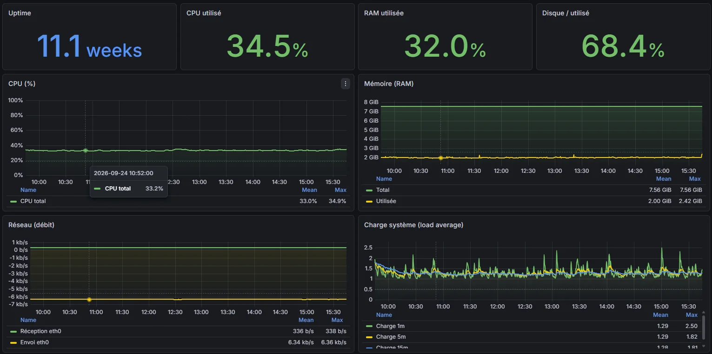

Perso · VPS OVH
Stack d'observabilité auto-hébergée
Métriques, journaux et sécurité d'un VPS Ubuntu réunis dans Grafana, derrière un accès Cloudflare Zero Trust. Un terrain d'entraînement à la supervision, en conditions réelles.
Contexte
En entreprise, j'ai utilisé Zabbix et Aruba Instant On pour superviser le réseau. Sur mon propre VPS, je voulais monter une supervision complète moi-même, avec la pile Grafana : métriques système et conteneurs, centralisation des journaux, et un œil sur les attaques que subit tout serveur exposé sur Internet.
Architecture
Deux chaînes de collecte, une seule interface, aucun port d'administration ouvert au public.
Dashboards
Des tableaux de bord construits pour répondre à une question précise chacun.
{kind=link}


Un troisième tableau de bord place sur une carte les adresses IP bannies par fail2ban, géolocalisées avec la base GeoLite2.
Sécurisation
Superviser un serveur exposé, c'est d'abord réduire sa surface d'attaque.
Accès à Grafana
Grafana n'est pas exposé directement : on y accède par un tunnel Cloudflare Zero Trust, protégé par un code à usage unique (OTP).
SSH durci
Authentification par clé ed25519 uniquement, connexion par mot de passe désactivée.
fail2ban
Les adresses qui multiplient les échecs sont bannies automatiquement, et chaque bannissement remonte dans les tableaux de bord.
Ce que ça montre
- Visible Sur 2 jours : 1,22 k tentatives de connexion SSH échouées et 134 adresses bannies. Le bruit de fond d'Internet devient mesurable.
- Stable Au moment de la capture, le serveur tournait depuis 11,1 semaines sans redémarrage.
- Centralisé Métriques et journaux sont consultables au même endroit, avec un seul point d'accès protégé.